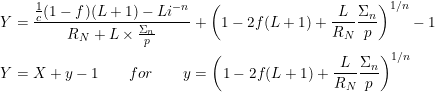
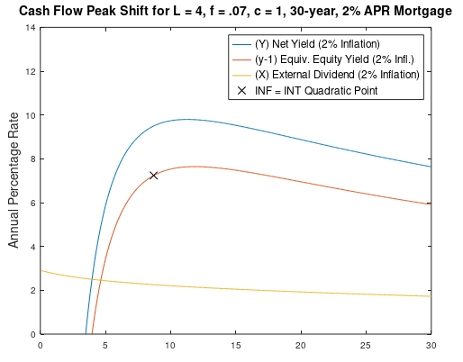
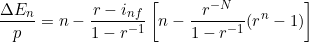
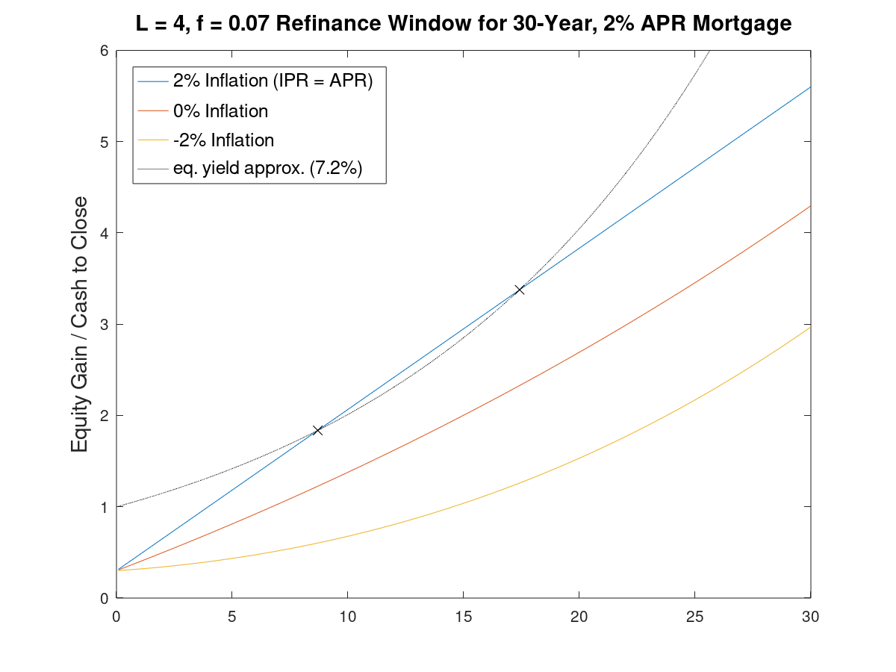
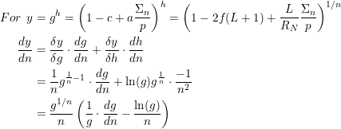
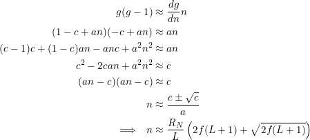

When Should I Sell or Refinance?
This is the seventh part of a series Should I Buy or Rent?
As a powerful argument on the nature of fiat currency, as real interest rates trend toward zero, the optimum period for owning a mortgage liability becomes approximatable analytically! But, without getting sidetracked into economic debate, the goal here is find the peak yield for owning a property and mortgage.
The inflation (i) adjusted yield depends on the leverage ratio (L) and the equity buildup Σ(n)/p, and these equation and all the other terms are defined in those articles. For here, the combined yield (Y) is composed of two parts, the cash flow dividend (X) made each month and an ammortized dividend from equity buildup (y)-1 when you sell or refinance. These two parts are demonstrated in the graph below.
To help determine an approximate time for peak yields, there are three assumptions we will use.
- Inflation and interest rates are nearly equal.
- Inflation is low enough a first order approximation of the natural log holds.
- The leverage ratio is sufficiently large and external yield (X) sufficiently flat that the peak net yield (Y) occurs nearly concurrently with equity yield (y).
Maximizing Equity Yield
The rate of equity buildup, in inflation back-adjusted terms is:
If we assume real interest rates are zero, or that inflation equals the nominal interest rate (i = r), then equity buildup becomes linear and the first intersection point of an "refinance window" can be found quadratically. This optimum "window" represents the tangent point for capital gains from equity buildup (blue), equivalently compared to regular dividends from stocks or rental cash flow (dotted black).
Optimum Point Derivation
To make the algebra easier, we define some helper variables and then take the derivative of the equity yield (y) to find its optimum.
Setting the derivative equal to zero, substituting n for Σn/p, and assuming g is near 1 to approximate ln(g) = g - 1 results in a quadratic equation we can solve.
The long tangent of the last three articles was to reach this point. Now the mortgage calculator can estimate yields from the loan liability for comparisons to stocks or other investments!